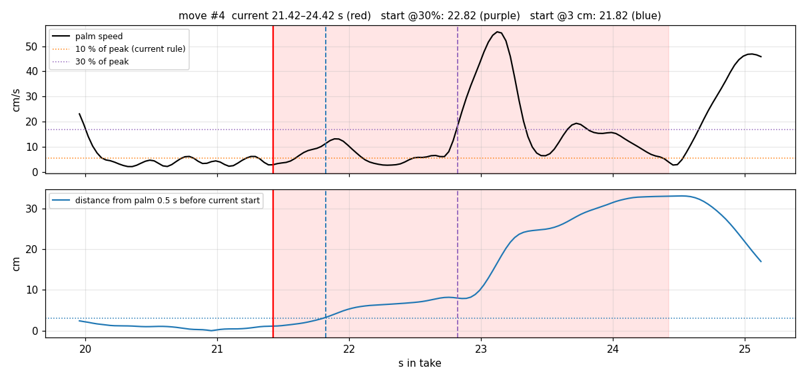
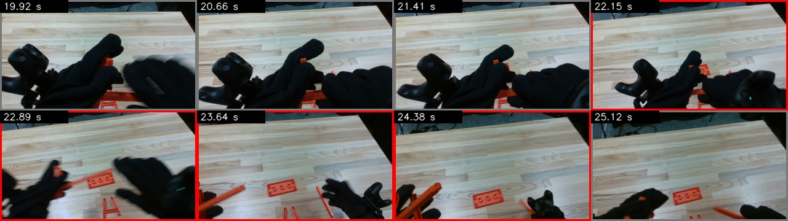
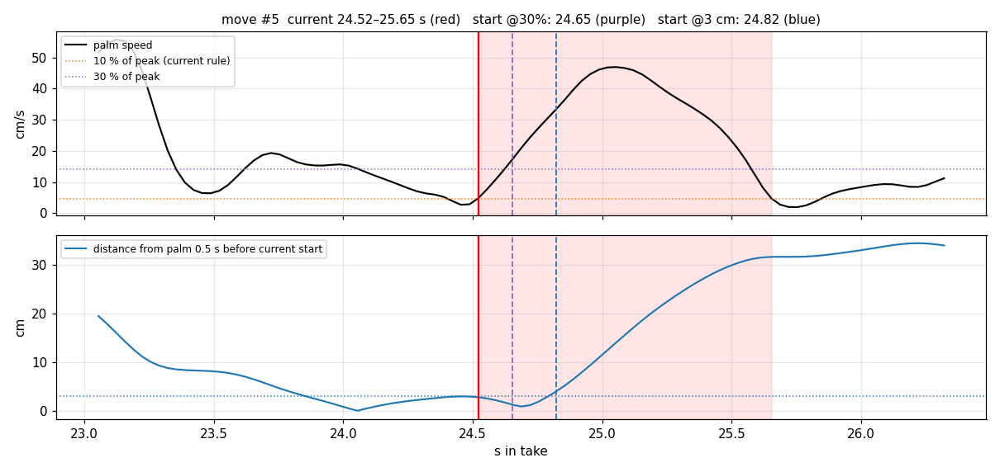
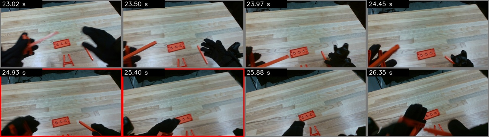
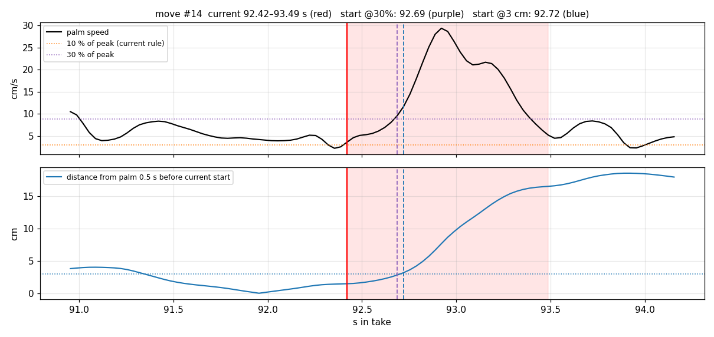
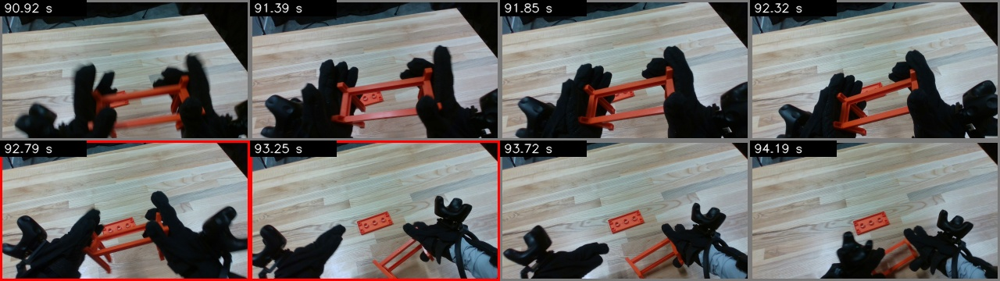
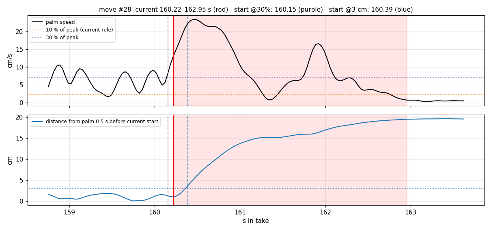
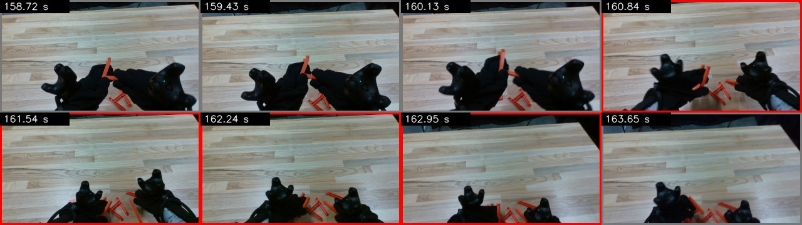
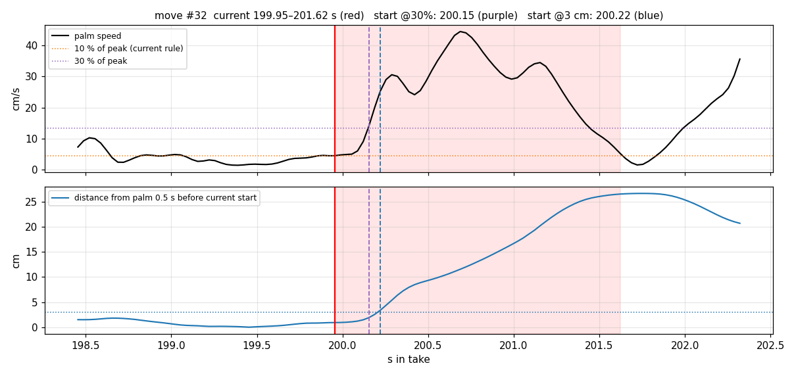
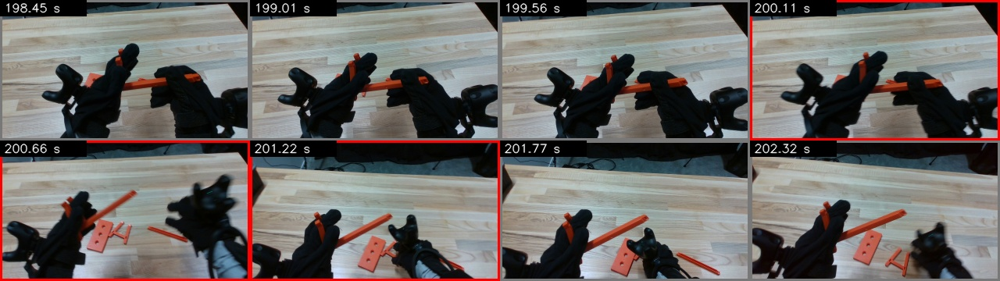

Top: palm speed (moves_hmm). Bottom: distance from where the palm was 0.5 s before the current start. Red band = current move; purple dashed = start if cut at 30 % of the peak; blue dashed = start when the palm is 3 cm away. Frames: evenly over the plotted window, red border = inside the current move.









